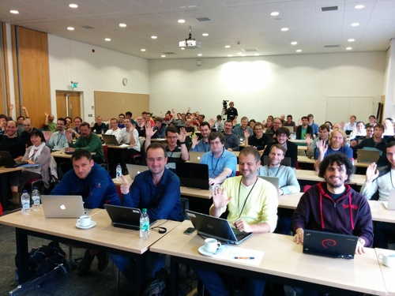

Why you (and your colleagues) should go to Euroscipy
Fri 03 July 2015 by Emmanuelle GouillartEarly-bird registration for the Euroscipy conference ends this Tuesday (July 7th): did you register already? The annual European conference on Scientific Python will take place in Cambridge UK, from August 26 to 29. Euroscipy 2015 is the 8th edition of the conference, with previous editions taking place in Leipzig, Paris and Brussels.
Euroscipy includes two days of tutorials (August 26-27), which are incredibly good value: for 50 or 100 GBP (academic/student or regular price), you will take part in hands-on tutorials given by teachers with a proficient knowledge of the Scientific Python ecosystem. Tutorial speakers are often developers of the main scientific python packages on top of being seasoned users of the ecosystem. They give these tutorials for free, because they believe that Euroscipy is an efficient way to train a large number of people in one event. In comparison, companies rightly charge several thousands of euros for multi-day trainings in scientific Python. Disclaimer: obviously, training given during the tutorials cannot be as personalized as trainings focusing on small groups, so I'm not saying that people should attend tutorials only instead of on-demand professional training! Go for the on-demand training if your lab/company can afford it, of course.

Skills in scientific computing become more and more valuable in public labs and companies, with the ever-increasing volume and variety of scientific data and the explosion of the data-based digital economy. Yet the number of science and engineering students getting proper academic training in scientific computing is still astonishingly low. Therefore, most scientists use self-taught scientific computing skills. The simplicity of the Python language might lure many into thinking that they master programming well enough, but using NumPy efficiently, for example, requires some effort. It happens to me quite often that a colleague from the lab shows me a piece of Python code he or she's struggling with, and that classical NumPy machinery such as masking with a boolean array, or rolling over array axes, makes it trivial. Trainings such as Euroscipy's tutorials can therefore boost your learning curve, by being introduced to a consistent set of good practices and having the opportunity to test these new skills thanks to hands-on exercises. I'm therefore convinced that there is a large pool of students, researchers in universities or company employees, that can benefit greatly from attending Euroscipy's tutorials. Nowadays, good scientific computing skills can contribute significantly to the performance of a lab or a company, and trying to improve the average computing skill level should be among the top priorities of every scientific group leader.
More advanced users will also have exciting subjects to get their teeth into, with an advanced tutorial track that includes a thorough Cython tutorial, statistics in Python, or a tutorial on image processing scikit-image given by Juan Nunez-Iglesias and yours truly. For users that master well the core of Python and NumPy, two possible areas of improvement are usually 1) better programming skills (for example using good practices such as testing and version control or mastering simple optimization strategies such as advanced NumPy or Cython) and 2) and better knowledge of scientific computing, both on the algorithmic and implementation side. I always learn a lot on the two sides when attending Euroscipy tutorials.
Besides the quality of the training delivered at Euroscipy, another bonus of the conference is the interaction with other participants. Euroscipy's audience is a crowd of enthusiastic and skilled people, coming from diverse fields. You can actually learn almost as much from chatting with people about your experience, best practices (and frustrations), as from tutorials and talks. Social events provide a great opportunity for chatting and networking, in a relaxed and friendly atmosphere. I appreciate very much the mixed crowd of people from academic labs, start-ups and industry, which is quite unique among the conferences I attend. Students can improve their job perspectives by meeting future employers, and by realizing which areas of science and industry hire people with scientific computing skills. My only regret is that the gender ratio is not balanced enough, but women will feel comfortable in a crowd that is welcoming, friendly and respectful. It is my hope that more and more female scientists will come to Euroscipy to become power-users of scientific Python.
Finally, if you can't make it this year to Euroscipy, you can still benefit from the SciPy lecture notes, a large set of tutorials that were realized for previous Euroscipy conferences. The SciPy lecture notes are a comprehensive set of tutorials, starting from the core of Scientific Python (mastering the Python language and NumPy) to more advanced topics (advanced NumPy, optimizing code) and specialized packages (scikit-learn, scikit-image). When a new person in the lab wishes to start learning Python for science, I usually direct her to the Scipy lecture notes to get started.
Hope to see you at Euroscipy 2015!